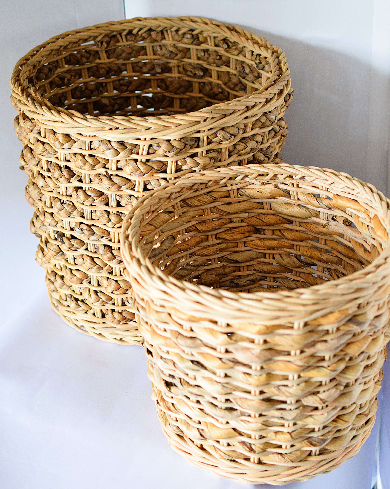
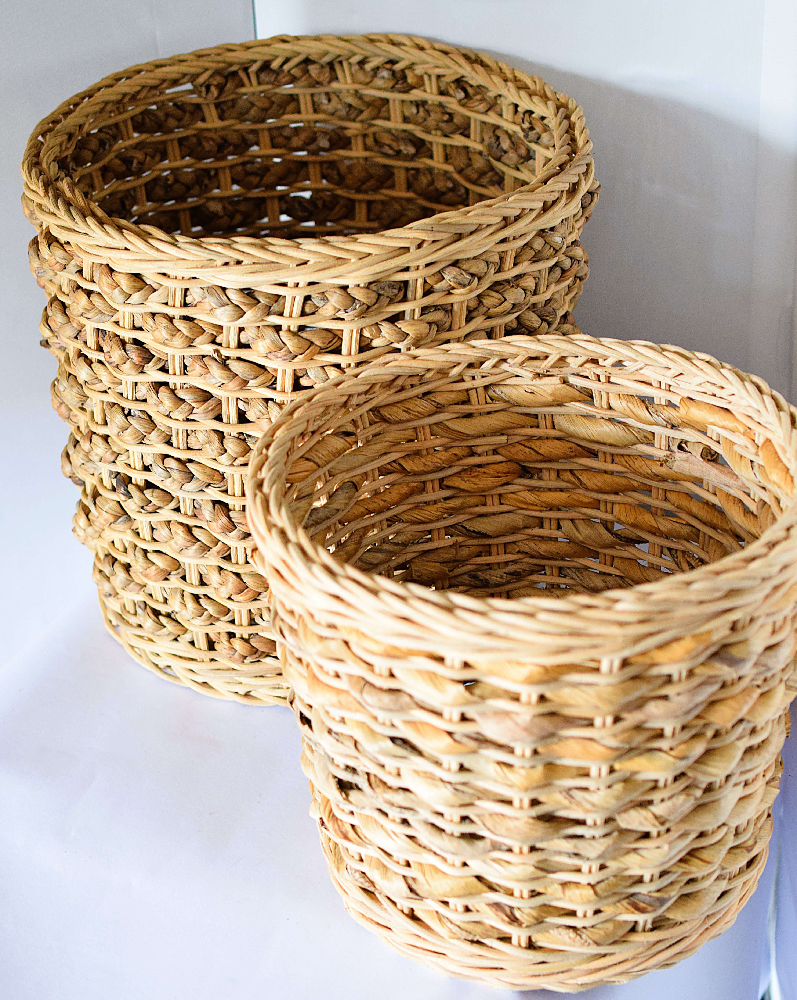

Bali Kamasan Art Painting Style:
A Timeless Traditional Masterpiece
The Kamasan painting style is one of Bali’s oldest and most iconic traditional art forms, originating from the village of Kamasan in Klungkung, Bali. This artistic style is deeply rooted in Balinese Hindu-Buddhist culture and is closely associated with wayang (shadow puppet) storytelling, depicting scenes from epic tales like the Ramayana and Mahabharata.
Characteristics of Kamasan Painting
✅Wayang-Style Figures – Characters are drawn with elongated bodies, delicate facial features, and elegant hand gestures, inspired by shadow puppetry.
✅ Natural Earthy Tones – Artists use a limited but harmonious color palette, often derived from natural pigments like ochre, indigo, and burnt sienna.
✅ Intricate Detailing – Every painting features highly detailed patterns, from character clothing to background ornaments, emphasizing spiritual symbolism.
✅ Flat Perspective – Unlike modern painting styles, Kamasan art maintains a two-dimensional perspective, focusing on storytelling rather than realism.


 
